CAMSHAFT > REMOVAL |
| 1. CHECK INJECTOR COMPENSATION CODE |
 |
After replacing fuel injector(s) with new one(s), input compensation code(s) of fuel injector(s) into ECM as follows:
Input the compensation code(s), which is/are imprinted on the head portion(s) of the new fuel injector(s), into the intelligent tester.
Input the new compensation code(s) into the ECM using the tester.
Turn the tester off and turn the engine switch off.
Wait for at least 30 seconds.
Turn the engine switch on (IG) and turn the tester on.
Clear DTC P1601 stored in the ECM using the tester (Click here).
Register compensation code.

Connect the intelligent tester to the DLC3.
Turn the engine switch on (IG).
Turn the tester on.
 |
Enter the following menus: Powertrain / Engine / Utility / Injector Compensation.
Press Next.
 |
Press Next again to proceed.
 |
Select "Set Compensation Code".
Press Next.
 |
Select the number of the cylinder corresponding to the fuel injector compensation code that you want to read.
Press Next.
 |
Register compensation code.
 |
 |
Check that the compensation code displayed on the screen is correct by comparing it with the 30 digit alphanumeric value on the head portion of the fuel injector.
Press Next to register the compensation code in the ECM.
 |
If you want to continue with other compensation code registrations, press Next. To finish the registration, press Cancel.
Turn the engine switch off and then turn the tester off.
Wait for at least 30 seconds.
Turn the engine switch on (IG) and then turn the tester on.
Clear DTC P1601 stored in the ECM using the tester (Click here).
| 2. DISCONNECT CABLE FROM NEGATIVE BATTERY TERMINAL |
Disconnect the cables from the negative (-) main battery and sub-battery terminals.
| 3. DRAIN ENGINE OIL |
 |
Remove the 2 bolts and No. 2 engine under cover seal from the No. 2 engine under cover.
Remove the oil filler cap.
Remove the oil pan drain plug and gasket, and then drain the engine oil into a container.
Install a new gasket and the oil pan drain plug.
| 4. REMOVE FRONT WHEEL |
| 5. DRAIN CLUTCH FLUID (for Manual Transmission) |
| 6. REMOVE FRONT FENDER SPLASH SHIELD SUB-ASSEMBLY LH |
 |
Remove the 3 bolts and screw.
Loosen the clip and remove the splash shield.
| 7. REMOVE FRONT FENDER SPLASH SHIELD SUB-ASSEMBLY RH |
Remove the 3 bolts and screw.
Loosen the clip and remove the splash shield.
| 8. REMOVE NO. 1 ENGINE UNDER COVER SUB-ASSEMBLY |
 |
Remove the 10 bolts and under cover.
| 9. REMOVE ENGINE COOLANT |
Loosen the radiator drain cock plug.
Remove the radiator reservoir cap to drain the coolant in the radiator.
Loosen the oil filter bracket drain cock plug to drain the coolant in the engine.

Tighten the radiator drain cock plug by hand.
 |
Tighten the oil filter bracket drain cock plug.
| 10. REMOVE UPPER RADIATOR SUPPORT SEAL |
 |
Remove the 7 clips and upper radiator support seal.
| 11. REMOVE NO. 3 ENGINE ROOM WIRE |
Disconnect the 4 wire harness clamps.
Remove the 2 nuts and No. 3 engine room wire.

| 12. REMOVE NO. 1 ENGINE COVER SUB-ASSEMBLY |
 |
Remove the 2 nuts and No. 1 engine cover.
| 13. REMOVE AIR CLEANER CAP SUB-ASSEMBLY |
 |
Loosen the hose clamp.
Disconnect the mass air flow meter connector and using a clip remover, detach the wire harness clamp from the air cleaner cap.
Detach the 4 clamps and remove the air cleaner cap.
| 14. REMOVE NO. 1 AIR CLEANER HOSE |
 |
Loosen the hose clamp and remove the No. 1 air cleaner hose.
| 15. REMOVE INTAKE AIR CONNECTOR |
 |
w/o Viscous Heater:
Disconnect the connector from the water temperature sensor.
Using a clip remover, detach the 3 wire harness clamps.
w/ Viscous Heater:
Disconnect the 2 connectors from the viscous with magnet clutch heater and water temperature sensor.
Using a clip remover, detach the 3 wire harness clamps.
 |
Loosen the 2 hose clamps and remove the 2 bolts and intake air connector.
| 16. REMOVE V-RIBBED BELT (w/ Viscous Heater) |
 |
Loosen the lock nut and turn the bolt counterclockwise.
Remove the V-ribbed belt.
| 17. REMOVE NO. 1 IDLER PULLEY (w/ Viscous Heater) |
 |
Remove the bolt, cover, No. 1 idler pulley and collar.
| 18. REMOVE NO. 3 IDLER PULLEY (w/ Viscous Heater) |
 |
Remove the nut and No. 3 idler pulley.
| 19. REMOVE V-RIBBED BELT |
 |
Using a wrench to the V-ribbed belt tensioner bracket, turn the wrench clockwise and remove the V-ribbed belt.
| 20. REMOVE FRONT FENDER APRON SEAL FRONT RH |
 |
Remove the 3 clips and front fender apron seal front RH.
| 21. REMOVE FRONT FENDER APRON SEAL REAR RH |
 |
Remove the 4 clips and front fender apron seal rear RH.
| 22. REMOVE FRONT FENDER APRON SEAL FRONT LH |
 |
w/o KDSS:
Remove the 4 clips and front fender apron seal front LH.
 |
w/ KDSS:
Remove the 3 clips and front fender apron seal front LH.
| 23. REMOVE FRONT FENDER APRON SEAL REAR LH |
 |
Remove the 4 clips and front fender apron seal rear LH.
| 24. REMOVE VANE PUMP OIL RESERVOIR ASSEMBLY |
 |
Insert a screwdriver between the reservoir and oil reservoir bracket, push the claw, and then disconnect the reservoir by pulling it upwards.
| 25. REMOVE NO. 1 OIL RESERVOIR BRACKET |
 |
Remove the 2 bolts and bracket.
| 26. REMOVE RADIATOR RESERVOIR ASSEMBLY |
 |
Disconnect the 2 hoses.
Remove the 3 bolts and radiator reservoir.
| 27. REMOVE VANE PUMP ASSEMBLY |
 |
Remove the 2 nuts and vane pump.
Remove the O-ring from the vane pump.
| 28. REMOVE OIL COOLER TUBE (for Automatic Transmission) |
 |
Disconnect the inlet and outlet No. 1 oil cooler hose.
 |
Disconnect the inlet No. 2 and No. 3 oil cooler hoses.
 |
Disconnect the inlet No. 4 oil cooler hose.
 |
Remove the 2 bolts and transmission oil cooler tube.
| 29. REMOVE FAN SHROUD WITH FAN |
 |
Loosen the 4 nuts holding the fluid coupling fan.
 |
Remove the 2 bolts holding the fan shroud.
 |
Remove the 4 nuts of the fluid coupling fan, and then remove the shroud together with the fluid coupling fan.
| 30. REMOVE FRONT FENDER MAIN SEAL LH |
 |
Using a clip remover, detach the 3 clips and remove the fender main seal.
| 31. REMOVE FRONT FENDER MAIN SEAL RH |
| 32. REMOVE FRONT WIPER ARM LH |
Remove the nut, wiper arm and blade.
| 33. REMOVE FRONT WIPER ARM RH |
Remove the nut, wiper arm and blade.
| 34. REMOVE HOOD TO COWL TOP SEAL |
 |
Using a clip remover, detach the 12 clips, 4 clamps and remove the hood to cowl top seal.
| 35. REMOVE COWL TOP VENTILATOR LOUVER SUB-ASSEMBLY |
 |
Remove the washer hose.
 |
Remove the 2 clips.
Detach the 17 claws and remove the cowl top ventilator louver sub-assembly.
| 36. REMOVE INTERCOOLER ASSEMBLY |
 |
Loosen the No. 1 air hose clamp.
 |
Loosen the No. 2 air hose clamp.
 |
Disconnect the turbo pressure sensor connector, intake air temperature sensor connector and vacuum hose.
 |
Remove the 6 nuts, 2 bolts and intercooler.
Remove the 2 gaskets from the air tube LH and RH.
| 37. REMOVE NO. 1 AIR HOSE |
 |
Loosen the hose clamp and remove the No. 1 air hose.
| 38. REMOVE NO. 2 AIR HOSE |
 |
Loosen the hose clamp and remove the No. 2 air hose.
| 39. REMOVE NO. 2 ENGINE OIL LEVEL DIPSTICK GUIDE |
 |
Disconnect the wire harness clamp from the No. 2 engine oil level dipstick guide.
 |
Disconnect the ventilation hose from the cylinder head cover RH.
Remove the 2 bolts and No. 2 engine oil level dipstick guide.
Remove the O-ring from the No. 2 engine oil level dipstick guide.
| 40. REMOVE AIR TUBE SUB-ASSEMBLY RH |
 |
Loosen the hose clamp.
Remove the air tube from the throttle body.
| 41. REMOVE CLUTCH HOSE (for Manual Transmission) |
 |
Disconnect the 2 flexible hose tubes from the clutch hose with a 10 mm union nut wrench while holding the flexible hose with a wrench.
Remove the 2 clips.
 |
Remove the bolt and clutch hose.
| 42. REMOVE AIR TUBE SUB-ASSEMBLY LH |
 |
Loosen the hose clamp.
Remove the air tube from the throttle body.
| 43. REMOVE TUBE CONNECTOR TO FLEXIBLE HOSE TUBE (for Manual Transmission) |
 |
Using a 10 mm union nut wrench, disconnect the tube connector to flexible hose tube from the clutch tube to release cylinder 2 way.
 |
Remove the 2 bolts and tube connector to flexible hose tube.
| 44. DISCONNECT WATER HOSE SUB-ASSEMBLY |
 |
| 45. REMOVE NO. 3 WATER BY-PASS PIPE (w/o Viscous Heater) |
 |
Remove the 2 bolts and disconnect the 2 water hose ends, and then remove the No. 3 water by-pass pipe.
| 46. REMOVE HEATER WATER PIPE SUB-ASSEMBLY (w/ Viscous Heater) |
 |
Remove the 4 bolts and disconnect the 4 water hose ends, and then remove the heater water pipe.
| 47. REMOVE NO. 3 AIR TUBE |
 |
Disconnect the wire harness from the clamp.
Remove the nut and ground wire.
 |
Remove the bolt and disconnect the wire harness bracket.
 |
Loosen the hose clamp and remove the bolt and No. 3 air tube.
| 48. REMOVE NO. 1 AIR CLEANER PIPE SUB-ASSEMBLY |
 |
Loosen the hose clamp.
Remove the bolt and No. 1 air cleaner pipe.
| 49. REMOVE NO. 4 AIR TUBE |
 |
Remove the bolt and disconnect the suction hose.
 |
Loosen the hose clamp and remove the bolt and No. 4 air tube.
| 50. REMOVE NO. 2 AIR CLEANER PIPE SUB-ASSEMBLY |
 |
Disconnect the ventilation hose from the oil separator.
Loosen the hose clamp.
Remove the bolt and No. 2 air cleaner pipe.
| 51. REMOVE VISCOUS HEATER ASSEMBLY WITH MAGNET CLUTCH (w/ Viscous Heater) |
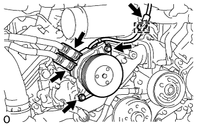 |
Disconnect the connector and detach the clamp.
Using pliers, grip the claws of the clips and slide the 2 clips.
Disconnect the 2 heater hoses.
Remove the 2 bolts and heater assembly.
| 52. REMOVE NO. 1 IDLER PULLEY BRACKET (w/ Viscous Heater) |
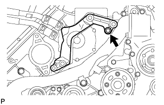 |
Remove the bolt and No. 1 idler pulley bracket.
| 53. REMOVE NO. 4 WATER BY-PASS PIPE |
 |
w/ EGR System:
Remove the 2 bolts and nut.
Disconnect the 4 water hose ends, and then remove the No. 4 water by-pass pipe.
 |
w/o EGR System:
Remove the 2 bolts and nut.
Disconnect the 3 water hose ends, and then remove the No. 4 water by-pass pipe.
| 54. DISCONNECT FUEL HOSE |
 |
| 55. DISCONNECT ENGINE WIRE |
LH Side:
 |
Disconnect the 4 connectors from the injector driver.
Remove the 4 connectors and detach the wire harness holder from the relay block.
Remove the bolt and disconnect the ground wire.
Disconnect the wire harness from the wire harness clamp holder.
 |
Remove the bolt and disconnect the ground wire from the body panel.
Using a clip remover, detach the ground wire clamp labeled A from the relay block side.
Disconnect the wire harness from the wire harness clamp holder labeled B.
 |
Disconnect the 4 connectors.
Using a clip remover, detach the 3 wire harness clamps.
 |
Disconnect the 2 connectors.
Using a clip remover, detach the 3 wire harness clamps.
 |
Disconnect the 8 connectors.
Remove the 2 bolts labeled A and disconnect the engine wire protector.
Remove the bolt labeled B and engine wire harness bracket.
for RHD:
Disconnect the wire harness from the wire harness clamp holder labeled C.
RH Side:
 |
Disconnect the 4 connectors.
Using a clip remover, detach the 5 wire harness clamps.
 |
Disconnect the 7 connectors.
Using a clip remover, detach the wire harness clamp.
Remove the 3 bolts labeled A and disconnect the wire harness protector.
Remove the bolt labeled B and wire harness bracket.
Remove the nut labeled C and glow plug wire harness.
 |
for LHD:
Disconnect the 4 connectors, and detach the wire harness tab labeled A from the relay block.
Disconnect the ECM connector.
Disconnect the wire harness from the wire harness clamp holder.
for RHD:
 |
Disconnect the wire harness from the wire harness clamp holder.
 |
Disconnect the 4 connectors, and detach the wire harness tab labeled A from the relay block.
Disconnect the ECM connector.
Disconnect the wire harness from the wire harness clamp holder.
| 56. REMOVE NO. 2 FUEL PIPE SUB-ASSEMBLY |
 |
Disconnect the fuel hose from the No. 5 nozzle leakage pipe.
Remove the bolt and No. 2 injection pipe clamp.
Remove the union bolt and gasket.
Remove the bolt, nut and No. 2 fuel pipe.
| 57. REMOVE NO. 6 INJECTION PIPE SUB-ASSEMBLY |
 |
w/ EGR System:
Using a union nut wrench, loosen the No. 6 injection pipe ends.
Remove the 2 nuts and 2 No. 2 injection pipe clamps.
Remove the No. 6 injection pipe.
 |
w/o EGR System:
Using a union nut wrench, loosen the No. 6 injection pipe ends.
Remove the nut and No. 2 injection pipe clamp.
Remove the bolt and No. 6 injection pipe.
| 58. REMOVE INJECTION PIPE LH |
 |
Remove the 2 nuts and 4 injection pipe clamps.
 |
Using a union nut wrench, remove the 4 injection pipes.
| 59. REMOVE COMMON RAIL ASSEMBLY LH |
 |
Remove the 2 bolts and common rail.
| 60. REMOVE FUEL FILTER TO INJECTION PUMP FUEL PIPE SUB-ASSEMBLY |
 |
Disconnect the 2 hoses from the fuel pipe.
Remove the bolt and fuel filter to injection pump fuel pipe.
| 61. DISCONNECT NO. 2 ENGINE WIRE |
 |
Remove the 3 bolts and using a clip remover, detach the 2 wire harness clamps, and then disconnect the No. 2 engine wire.
| 62. REMOVE INJECTION PIPE RH |
 |
Remove the 2 nuts and 4 injection pipe clamps.
 |
Using a union nut wrench, remove the 4 injection pipes.
| 63. REMOVE NO. 2 IDLER PULLEY (w/ Viscous Heater) |
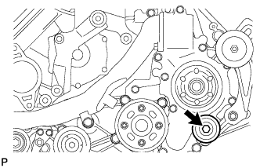 |
Remove the bolt and No. 2 idler pulley.
| 64. REMOVE NO. 2 IDLER PULLEY BRACKET (w/ Viscous Heater) |
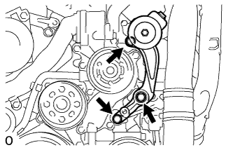 |
Remove the 3 bolts and idler pulley bracket.
| 65. REMOVE NO. 1 VACUUM SWITCHING VALVE ASSEMBLY (for Engine Mounting) |
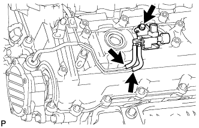 |
Disconnect the 2 vacuum hoses.
Remove the bolt and vacuum switching valve.
| 66. REMOVE NO. 1 VACUUM TRANSMITTING PIPE SUB-ASSEMBLY |
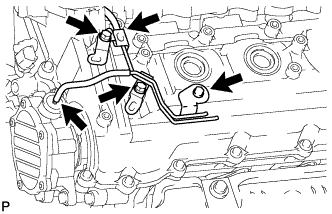 |
Disconnect the 2 vacuum hoses.
Remove the 3 bolts and vacuum transmitting pipe.
| 67. REMOVE VACUUM PUMP ASSEMBLY |
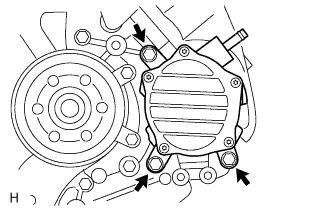 |
Remove the 3 bolts and vacuum pump.
Remove the 2 O-rings.
| 68. DISCONNECT NO. 2 VENTILATION HOSE |
 |
| 69. DISCONNECT NO. 3 VENTILATION HOSE |
 |
| 70. REMOVE CYLINDER HEAD COVER SILENCER RH |
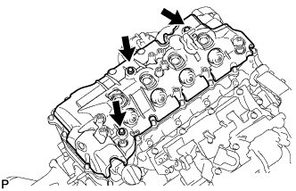 |
Remove the 3 bolts and cylinder head cover silencer.
| 71. REMOVE CYLINDER HEAD COVER SILENCER LH |
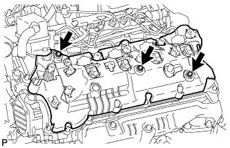 |
Remove the 3 bolts and cylinder head cover silencer.
| 72. REMOVE NOZZLE HOLDER SEAL RH |
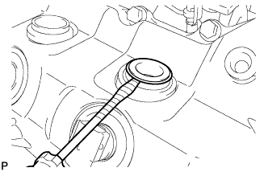 |
Using a small screwdriver, remove the 4 holder seals by prying the portion between each holder seal and the cutout part of the cylinder head cover.
| 73. REMOVE CYLINDER HEAD COVER SUB-ASSEMBLY RH |
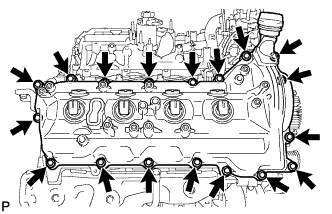 |
Remove the 18 bolts, cylinder head cover and gasket.
| 74. REMOVE NOZZLE HOLDER GASKET RH |
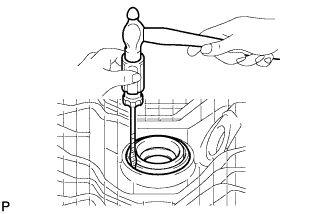 |
Using a small screwdriver and hammer, remove the 4 nozzle holder gaskets.
| 75. REMOVE OIL SEPARATOR ASSEMBLY |
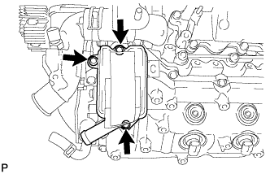 |
Remove the 3 bolts, oil separator and gasket.
| 76. REMOVE NOZZLE HOLDER SEAL LH |
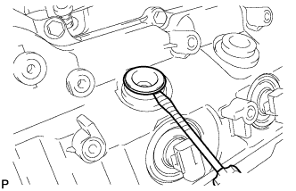 |
Using a small screwdriver, remove the 4 holder seals by prying the portion between each holder seal and the cutout part of the cylinder head cover.
| 77. REMOVE CYLINDER HEAD COVER SUB-ASSEMBLY LH |
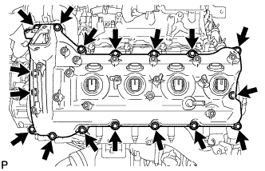 |
Remove the 17 bolts, cylinder head cover and gasket.
| 78. REMOVE NOZZLE HOLDER GASKET LH |
Using a small screwdriver and hammer, remove the 4 nozzle holder gaskets.
| 79. REMOVE FUEL INJECTOR RH |
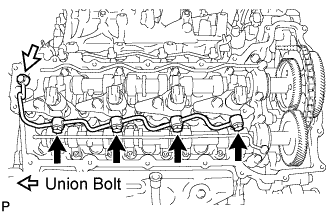 |
Remove the union bolt, 4 hollow screws, 5 gaskets and nozzle leakage pipe.
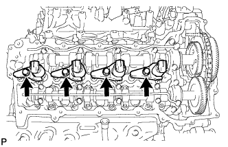 |
Remove the 4 bolts, 4 washers, 4 nozzle holder clamps and 4 injectors.
Remove the O-ring from each injector.
Remove the 4 injection nozzle seats from the cylinder head.
| 80. REMOVE FUEL INJECTOR LH |
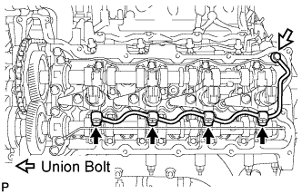 |
Remove the union bolt, 4 hollow screws, 5 gaskets and No. 2 nozzle leakage pipe.
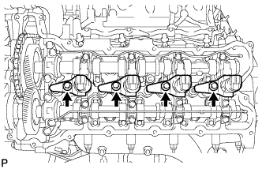 |
Remove the 4 bolts, 4 washers, 4 nozzle holder clamps and 4 injectors.
Remove the O-ring from each injector.
Remove the 4 injection nozzle seats from the cylinder head.
| 81. REMOVE NO. 1 AND NO. 2 CAMSHAFTS |
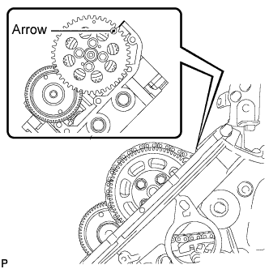 |
Rotate the crankshaft clockwise, and align the No. 1 camshaft timing sprocket arrow with the cylinder head upper surface.
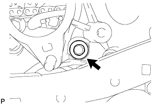 |
Using a 10 mm hexagon wrench, remove the taper screw plug.
Fix the No. 1 chain tensioner in place.
Push the tensioner slipper away from the tensioner, and move the stopper plate clockwise to release the lock as shown in A.
Push down the tensioner slipper and move the stopper plate counterclockwise to set the lock as shown in B.
Push the tensioner slipper away from the tensioner, and insert a hexagon wrench into the stopper plate hole as shown in C.
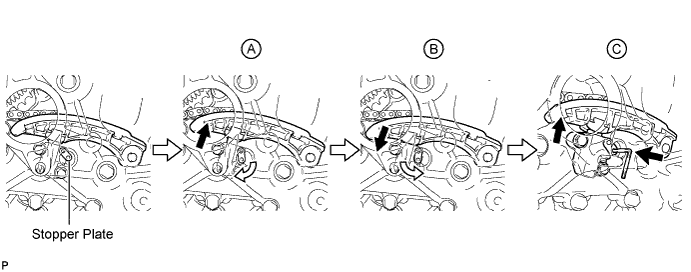
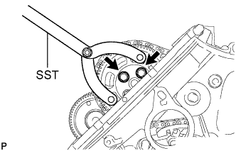 |
Using SST, hold the pump drive shaft gear.
Remove the 2 bolts.
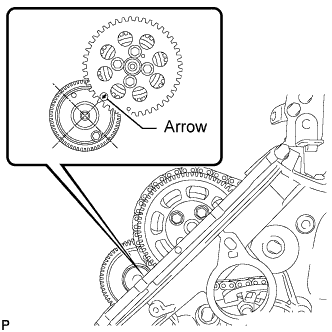 |
Rotate the crankshaft clockwise 360° so that the No. 1 camshaft timing sprocket arrow points at the No. 1 camshaft center.
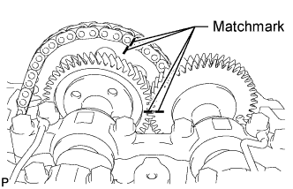 |
Place matchmarks on the No. 1 timing chain and No. 1 camshaft timing sprocket.
Place matchmarks on the No. 1 and No. 2 camshaft gears.
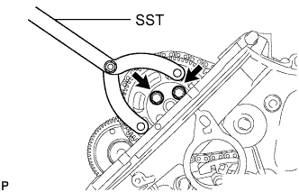 |
Using SST, hold the pump drive shaft gear.
Remove the 2 bolts and pump drive shaft gear.
Disconnect the No. 1 timing chain and No. 1 camshaft timing sprocket from the No. 2 camshaft.
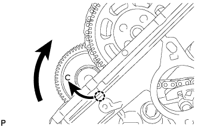 |
Turn the No. 1 camshaft clockwise so that the bolt is easier to install.
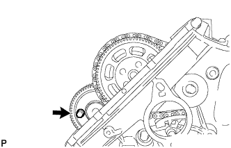 |
Using a 6 mm x 1.0 pitch service bolt with a length of 16 mm or more, fix the No. 1 camshaft in place.
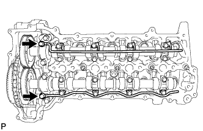 |
Loosen the 2 union bolts.
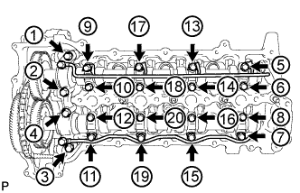 |
Uniformly loosen and remove the 20 bolts in the sequence shown in the illustration.
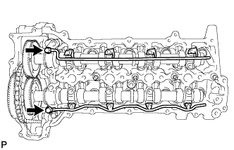 |
Remove the 2 union bolts and No. 1 and No. 2 oil feed pipes.
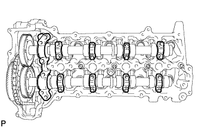 |
Remove the 8 No. 3 camshaft bearing caps and No. 1 camshaft bearing cap.
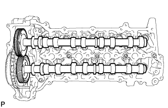 |
Remove the No. 1 and No. 2 camshafts.
| 82. REMOVE NO. 3 AND NO. 4 CAMSHAFTS |
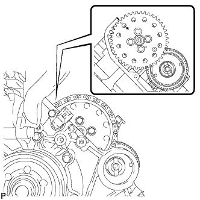 |
Rotate the crankshaft clockwise, and align the No. 2 camshaft timing sprocket arrow with the cylinder head upper surface.
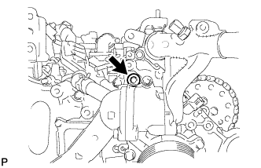 |
Using a 10 mm hexagon wrench, remove the taper screw plug.
Fix the No. 2 chain tensioner in place.
Push the tensioner slipper away from the tensioner, and move the stopper plate clockwise to release the lock as shown in A.
Push up the tensioner slipper and move the stopper plate counterclockwise to set the lock as shown in B.
Push the tensioner slipper away from the tensioner, and insert a hexagon wrench into the stopper plate hole as shown in C.
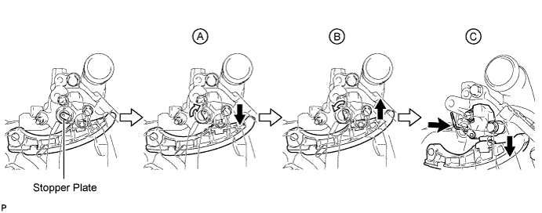
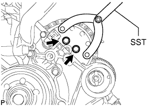 |
Using SST, hold the No. 2 camshaft timing sprocket.
Remove the 2 bolts.
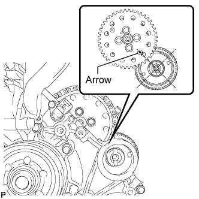 |
Rotate the crankshaft clockwise 360° so that the No. 2 camshaft timing sprocket arrow points at the No. 4 camshaft center.
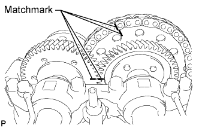 |
Place matchmarks on the No. 2 timing chain and No. 2 camshaft timing sprocket.
Place matchmarks on the No. 3 and No. 4 camshaft gears.
Using SST, hold the No. 2 camshaft timing sprocket.
Remove the 2 bolts, and disconnect the No. 2 timing chain and No. 2 camshaft timing sprocket from the No. 3 camshaft.
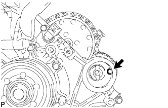 |
Using a 6 mm x 1.0 pitch service bolt with a length of 16 mm or more, fix the No. 4 camshaft in place.
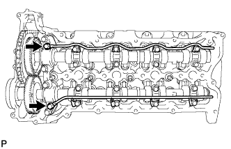 |
Loosen the 2 union bolts.
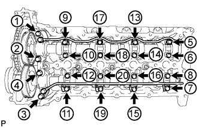 |
Uniformly loosen and remove the 20 bolts in the sequence shown in the illustration.
Remove the 2 union bolts and No. 3 and No. 4 oil feed pipes.
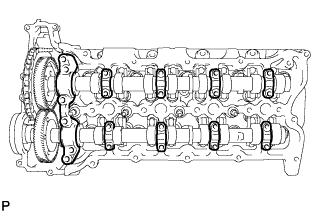 |
Remove the 8 No. 3 camshaft bearing caps and No. 4 camshaft bearing cap.
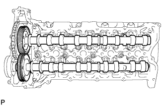 |
Remove the No. 3 and No. 4 camshafts.